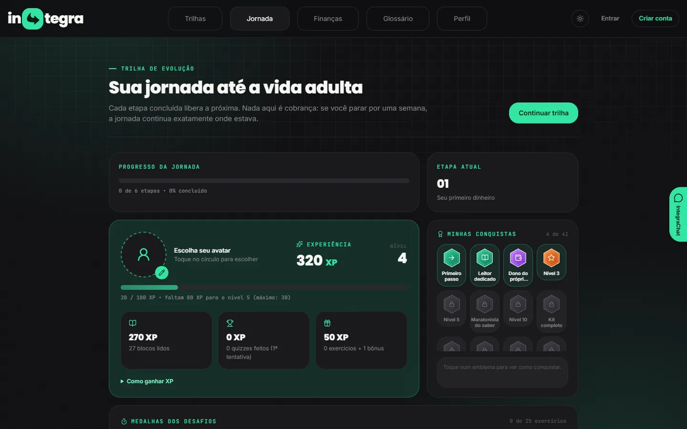

Integra Jovem
Uma plataforma que ajuda jovens que estão terminando a escola a se preparar para a vida adulta, com trilhas curtas sobre dinheiro, carreira, autoconhecimento e bem-estar digital.
- Curso
- Técnico em Desenvolvimento de Sistemas
- Escola
- Etec Dr. Demétrio Azevedo Jr.
- Equipe
- Thiago Proença, Kauã Felipe e Victória Monike
- Meu papel
- Full stack: front-end e back-end
O problema
Muitos jovens terminam a escola sem saber organizar o próprio dinheiro, escolher um caminho profissional ou lidar com as responsabilidades da vida adulta. O conteúdo que existe costuma ser longo, cheio de termos difíceis ou cercado de anúncios.
A proposta
Um espaço sem anúncios e sem vigilância, em que o jovem escolhe o que quer aprender e avança no próprio ritmo:
- Trilhas curtas por área e nível, com busca, filtros e progresso salvo.
- Jornada com experiência (XP), níveis, conquistas e medalhas dos desafios.
- Finanças: controle de gastos por categoria com gráficos, meta de reserva de emergência e simuladores de juros compostos e de juros dos bancos.
- Glossário com os termos difíceis explicados em linguagem simples.
- IntegraChat: um assistente que responde dúvidas e acolhe quem demonstra estar passando por um momento difícil.
- Conta e perfil, com cadastro, login, recuperação de senha e proteção contra robôs (captcha).


Minha parte
Trabalhei como full stack, participando tanto do front-end quanto do back-end do projeto.
Tecnologias
Next.js (App Router), React, TypeScript, Tailwind CSS, componentes shadcn/ui e Supabase para contas e dados. O projeto começou como protótipo e foi migrado para Next.js, mantendo o visual e o comportamento.